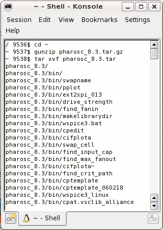

| vlsitechnology.org /Linux help/tar download | |
Download the TAR file | |
Linux help
Windows help
Linux Live CD
There are more complete instructions for using the library, especially the examples, with a Linux Live CD.
Download the pharosc_8.4.tar.gz and pharosc_examples_8.4.tar.gz files. Decide where you want to install the library, and put the files there. Then unpack with:
~ $ gunzip pharosc_8.4.tar.gz ~ $ gunzip pharosc_examples_8.4.tar.gz ~ $ tar xvf pharosc_8.4.tar ~ $ tar xvf pharosc_examples_8.4.tar |
The tar files can now be recompressed to save space. There will be a directory pharosc_8.4. I recommend making a link pharosc which points to pharosc_8.4. This way you can have multiple releases and point to the one you want to use by changing the link. The example here shows the library release and unpacked library in the home directory. Note that the link won't work on a FAT formatted disk (like a USB disk).
~ $ gzip pharosc_8.4.tar ~ $ gzip pharosc_examples_8.4.tar ~ $ ln -s pharosc_8.4 pharosc ~ $ ls -gGh lrwxrwxrwx 1 11 2007-09-14 14:39 pharosc -> pharosc_8.4 drwxr-xr-x 9 368 2007-09-14 14:02 pharosc_8.4 -rw-r--r-- 1 63M 2007-09-14 14:12 pharosc_8.4.tar.gz -rw-r--r-- 1 57M 2007-09-14 14:12 pharosc_examples_8.4.tar.gz |
The total unpacked library size is about 595MB, about 200MB in the examples and 395MB in the rest of the library.
Screen shot of unpacking. 